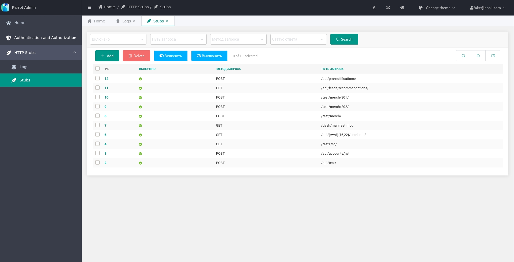

Parrot
Web-service for testing http requests and webhooks.


Links:
- Repository: https://github.com/Uma-Tech/parrot
- Documentation:
TDB - Docker Hub: https://registry.hub.docker.com/r/umahighload/parrot-app
- Issue tracker: https://github.com/Uma-Tech/parrot/issues
- Changelog: https://github.com/Uma-Tech/parrot/blob/develop/CHANGELOG.md
Components
- Database postgres.
- Python-app based on Django Web Framework.
Screenshots

Quick Start
System requires
- docker (https://www.docker.com/)
- docker-compose (https://github.com/docker/compose)
- make
(https://www.gnu.org/software/make/)
(all commands can be viewed by calling
makewithout parameters)
Local run
-
Clone the repo
git clone git@github.com:Uma-Tech/parrot.git -
Build or download the docker image
for buildmake buildfor download
docker pull umahighload/parrot-app:latest -
Apply migrations and create a superuser:
make shell # inside the container python manage.py migrate # apply migrations python manage.py createsuperuser # create a superuser exit ## leave from the container -
Start app with required services
make runserver -
Service will be available at
http://127.0.0.1:8042/
Usage
First step - Create a http-stub
- Go to
HTTP Stubs->Stubs - Click the
Addbutton - Fill in the required fields
- Click the
Savebutton
Logs
- Send a http-request to the created http-stub
- Go to
HTTP Stubs->Logs - Watch incoming requests :)
Contributing
We welcome all contributions!
See CONTRIBUTING.md
if you want to contribute.
You can start with issues that need some help
right now.